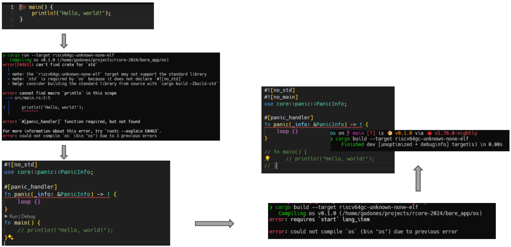
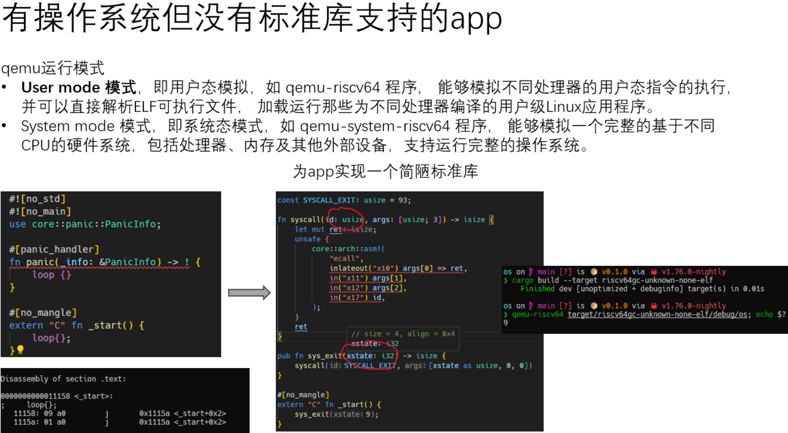
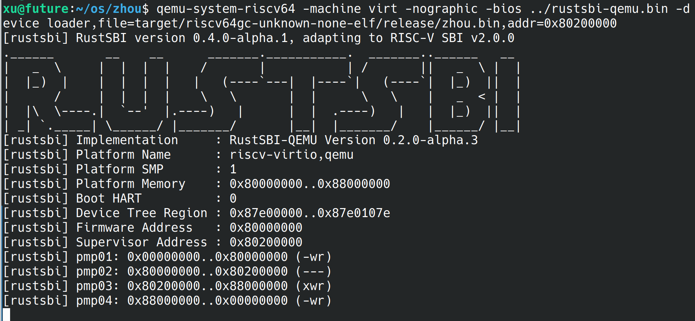
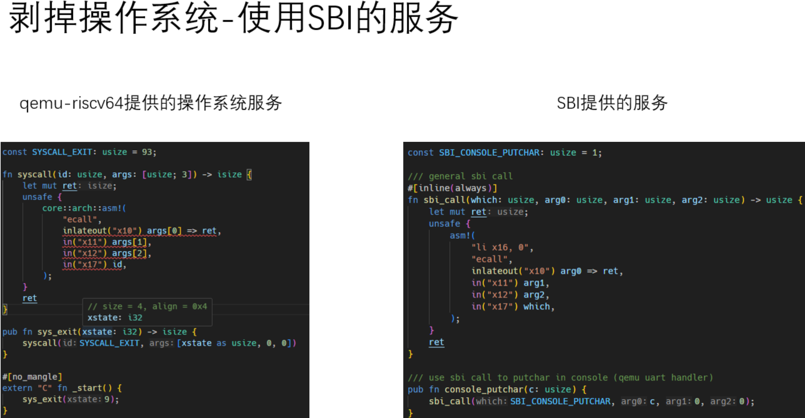

0. 背景
ubuntu 的开发环境，需要把 bootloader/rustsbi-qemu.bin 文件替换掉，最新版下载地址为：https://github.com/rustsbi/rustsbi-qemu/releases。
异常：用户程序主动调用 syscall 访问内核。用户程序 $->$ 内核。 中断：如果用户程序用访问 syscall 一直霸着CPU 不放，用户程序虽然没有触发syscall。kernel 可以主动中断用户程序。
修改编译目标 + 剥掉标准库
目标：
- 重新指定
三元组； - 剥掉
标准库； - 剥掉
os kernel； - app 直接操作硬件平台；
- 重新指定
1. qemu-riscv64 相当于提供了一个 OS kernel ，用户只需要输入用户程序。在 qemu-riscv64 的支持下，实现一个简单的标准库，实现 app。

上图 1 从 hello world 出发，具体细节：
1.1 缺 std
通过加 no_std；
1.2 缺 println；
暂时注释掉；
1.3 缺 panic （rust 程序里出了错，如非法访问造成程序崩溃，就需要panic，处理崩溃的实现 ）
1.4 不支持 main ，因为没有 std 的原因；
通过加 no_main
1.5 最后因为添加下面两个功能，添加了一个简单的标准库。见下图。
println!("Hello, world!");
sys_exit(9);

2. 利用 qemu-system-riscv64，把 OS kernel 去掉
2.1 对上一节实现的代码稍作调整，通过 ecall 调用 RustSBI 实现关机功能。
extern "C" fn _start() {
println!("Hello, world!");
sys_exit(9);
}
替换成：
extern "C" fn _start() {
shutdown();
}
- 用 qemu-system-riscv64 测试：
```
cargo build --release
rust-objcopy --binary-architecture=riscv64 target/riscv64gc-unknown-none-elf/release/os --strip-all -O binary target/riscv64gc-unknown-none-elf/release/os.bin
qemu-system-riscv64 -machine virt -nographic -bios ../bootloader/rustsbi-qemu.bin -device loader,file=target/riscv64gc-unknown-none-elf/release/os.bin,addr=0x80200000
rust-readobj -h target/riscv64gc-unknown-none-elf/release/os
```
注意 `-bios $(BOOTLOADER)` 意味着硬件加载了一个 BootLoader 程序，即 `SBI`。

无法退出，风扇狂转，感觉碰到死循环，卡死了。
问题在哪？通过 rust-readobj 分析 os 可执行程序，发现其入口地址不是 RustSBI 约定的 0x80200000 。
也就是说，通过 `qemu-system-riscv64 addr=0x80200000` 没有起作用。
我们需要修改程序的内存布局并设置好栈空间。
2.2 添加一个 linker
在 1.5 步骤，起始地址是一个默认的地址，我们需要一个 linker。 告诉编译器，如何放置 text,code.codata,等。
.cargo/config.toml 放置了 linker.ld 文件。
2.3 准备栈
写 app 时，我们不需要准备栈，qemu-riscv64 会为我们准备这个栈。 现在在祼机上运行了，我们需要自己准备栈。 如果自己不准备栈，sp 会仍然指向 qemu-system-riscv64 启动时执行到 SBI 时的栈，kernel 就会把 SBI 的栈损坏。
2.4 使用 SBI 服务，打印一个字符

上图的 syscall 参数规范，
- 参考：https://d3s.mff.cuni.cz/files/teaching/nswi200/202324/doc/riscv-abi.pdf
- 参考：https://jborza.com/post/2021-05-11-riscv-linux-syscalls/
上图的 SBI 参数规范，
2.5 打印一个字符串
疑问：
//! SBI console driver, for text output
use crate::sbi::console_putchar;
use core::fmt::{self, Write};
struct Stdout;
impl Write for Stdout {
fn write_str(&mut self, s: &str) -> fmt::Result {
for c in s.chars() {
console_putchar(c as usize);
}
Ok(())
}
}
pub fn print(args: fmt::Arguments) {
Stdout.write_fmt(args).unwrap();
}
/// Print! to the host console using the format string and arguments.
#[macro_export]
macro_rules! print {
($fmt: literal $(, $($arg: tt)+)?) => {
$crate::console::print(format_args!($fmt $(, $($arg)+)?))
}
}
/// Println! to the host console using the format string and arguments.
#[macro_export]
macro_rules! println {
($fmt: literal $(, $($arg: tt)+)?) => {
$crate::console::print(format_args!(concat!($fmt, "\n") $(, $($arg)+)?))
}
}
对这一段代码很不理解，impl Write for Stdout 实现的是 write_str 函数，为什么 print 调用的，又是 Stdout.write_fmt 名称?
参考：
- https://rustwiki.org/zh-CN/std/fmt/trait.Write.html
- https://juejin.cn/s/rust%20no_std%20fmt
- https://blog.csdn.net/xiangxianghehe/article/details/92839138
- https://xy-plus.gitbook.io/rcore-step-by-step/ge-shi-hua-shu-chu